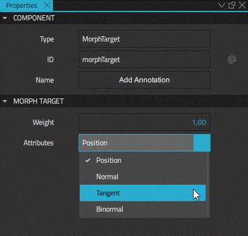

Morph Target
The Morph Target component can be used to define morph targets for vertex animation. Morph targets are the objects we bind to control the morphing of a model. Usually, morphing is controlled by using timeline animation or property animation. The degree of morphing is controlled by defining the Weight property of the Morph Target component.
The normal workflow is to use an external content creation tool to create a mesh, which also contains morph targets, and import it to Qt Design Studio.
To add a morph target for a model in Qt Design Studio, drag-and-drop a Morph Target component from Components > Qt Quick 3D > Qt Quick 3D to Scene in Navigator. Then select the model in Navigator, and in Properties > Model > Morph Targets, select the name of the Morph Target component.
Morph Target Properties
To define attributes and weight for a Morph Target, select it in Navigator and specify its properties in the Properties view.

Use the Weight property to specify the weight of the Morph Target. The value of Weight functions as the multiplication factor used by the linear interpolation. If the value is set to 1, the target is fully applied. If the Weight property value is set to 0, it has no influence.
Use the Attributes property to specify a set of attributes for the selected Morph Target. In order to animate vertex attributes in morphing, the mesh must contain those target attributes and the Morph Target must have the attributes enabled.
Click the dropdown menu to select one of the following attributes:
- Position animates the vertex positions.
- Normal animates the normal vectors.
- Tangent animates the tangent vectors.
- Binormal animates the binormal vectors.